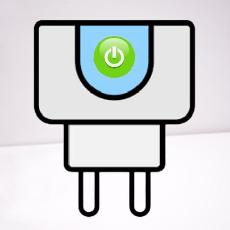
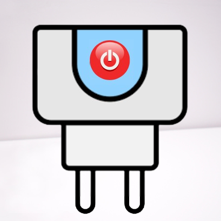

<div class="container-sm mt-5">
    <div class="row align-items-center justify-content-center">
        <div class="col card-max" *ngFor="let socket of sockets">
            <div class="card border-dark card-tamanio">

                <div class="container-sm">
                    <table class="table">
                        <tbody>
                            <tr>
                                <td colspan="2" *ngIf="switch_1[socket.idDevice]">
                                    
                                </td>
                                <td colspan="2" *ngIf="!switch_1[socket.idDevice]">
                                    
                                </td>
                            </tr>
                            <tr>
                                <td>
                                    <h5 class="cursor" (click)="toggleEnchufes()">{{socket.name}}</h5>
                                </td>
                                <td>
                                    <svg (click)="updateState(socket.idDevice)" xmlns="http://www.w3.org/2000/svg"
                                        width="16" height="16" fill="currentColor" class="bi bi-arrow-clockwise"
                                        viewBox="0 0 16 16">
                                        <path fill-rule="evenodd"
                                            d="M8 3a5 5 0 1 0 4.546 2.914.5.5 0 0 1 .908-.417A6 6 0 1 1 8 2v1z" />
                                        <path
                                            d="M8 4.466V.534a.25.25 0 0 1 .41-.192l2.36 1.966c.12.1.12.284 0 .384L8.41 4.658A.25.25 0 0 1 8 4.466z" />
                                    </svg>
                                    <svg (click)="delete(socket.idDevice)" xmlns="http://www.w3.org/2000/svg" width="16"
                                        height="16" fill="currentColor" class="bi bi-trash" viewBox="0 0 16 16">
                                        <path
                                            d="M5.5 5.5A.5.5 0 0 1 6 6v6a.5.5 0 0 1-1 0V6a.5.5 0 0 1 .5-.5Zm2.5 0a.5.5 0 0 1 .5.5v6a.5.5 0 0 1-1 0V6a.5.5 0 0 1 .5-.5Zm3 .5a.5.5 0 0 0-1 0v6a.5.5 0 0 0 1 0V6Z" />
                                        <path
                                            d="M14.5 3a1 1 0 0 1-1 1H13v9a2 2 0 0 1-2 2H5a2 2 0 0 1-2-2V4h-.5a1 1 0 0 1-1-1V2a1 1 0 0 1 1-1H6a1 1 0 0 1 1-1h2a1 1 0 0 1 1 1h3.5a1 1 0 0 1 1 1v1ZM4.118 4 4 4.059V13a1 1 0 0 0 1 1h6a1 1 0 0 0 1-1V4.059L11.882 4H4.118ZM2.5 3h11V2h-11v1Z" />
                                    </svg>
                                </td>
                            </tr>
                        </tbody>
                    </table>
                </div>

                <div class="card-body" *ngIf="showEnchufes">
                    <ul class="nav nav-tabs" role="tablist">
                        <li class="nav-item">
                            <a class="nav-link active" data-bs-toggle="tab" href="#ajustes{{socket.idDevice}}">Ajustes</a>
                        </li>
                        <li class="nav-item">
                            <a class="nav-link" data-bs-toggle="tab" href="#info{{socket.idDevice}}">Consumo</a>
                        </li>
                    </ul>


                    <div class="tab-content">
                        <div id="ajustes{{ socket.idDevice }}" class="container tab-pane active"><br>
                            <div class="form-check form-switch">
                                <input class="form-check-input" type="checkbox" role="switch" id="switch{{ socket.idDevice }}"
                                    [(ngModel)]="switch_1[socket.idDevice]"
                                    (click)="updateDevice($event, 'switch_1', socket)">
                                <label class="form-check-label" for="switchDefault">Switch</label>
                            </div>
                            <div class="form-check form-switch">
                                <input class="form-check-input" type="checkbox" role="switch" id="childLock{{ socket.idDevice }}"
                                    [(ngModel)]="child_lock[socket.idDevice]"
                                    (click)="updateDevice($event, 'child_lock', socket)">
                                <label class="form-check-label" for="childLockDefault">Child lock</label>
                            </div>
                            <div class="form-group">
                                <label for="countdown{{ socket.idDevice }}">Cuenta atrás:</label>
                                <input type="number" class="form-control" id="countdown{{ socket.idDevice }}" min="0" [(ngModel)]="countdown_1[socket.idDevice]"
                                    max="86400" step="1" (change)="updateDevice($event, 'countdown_1', socket)">
                            </div>
                            <div class="form-group">
                                <label for="relayStatus{{ socket.idDevice }}">Estado del relé:</label>
                                <select class="form-control" id="relayStatus{{ socket.idDevice }}"
                                    (change)="updateDevice($event, 'relay_status', socket)" [(ngModel)]="relay_status[socket.idDevice]">
                                    <option value="power_off">Apagado</option>
                                    <option value="power_on">Encendido</option>
                                    <option value="last">Último</option>
                                </select>
                            </div>
                            <div class="form-group">
                                <label for="lightMode{{ socket.id }}">Modo de luz:</label>
                                <select class="form-control" id="lightMode{{ socket.id }}"
                                    (change)="updateDevice($event, 'light_mode', socket)" [(ngModel)]="light_mode[socket.idDevice]">
                                    <option value="relay">Relé</option>
                                    <option value="pos">Posición</option>
                                    <option value="none">Ninguno</option>
                                </select>
                            </div>
                        </div>
                        <div id="info{{ socket.idDevice }}" class="container tab-pane fade"><br>
                            <div>
                                <p>cur_current (mA): {{cur_current[socket.idDevice]}}</p>
                                <p>cur_power (W): {{cur_power[socket.idDevice]}}</p>
                                <p>cur_voltage (V): {{cur_voltage[socket.idDevice]}}</p>
                                <p>Consumo (W): {{cur_current[socket.idDevice] * cur_voltage[socket.idDevice]}}</p>
                            </div>
                        </div>
                    </div>
                </div>

            </div>
        </div>
    </div>
</div>